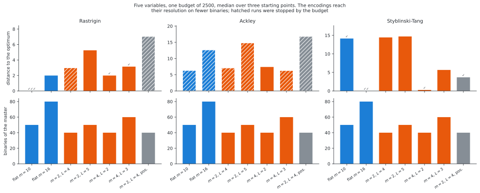
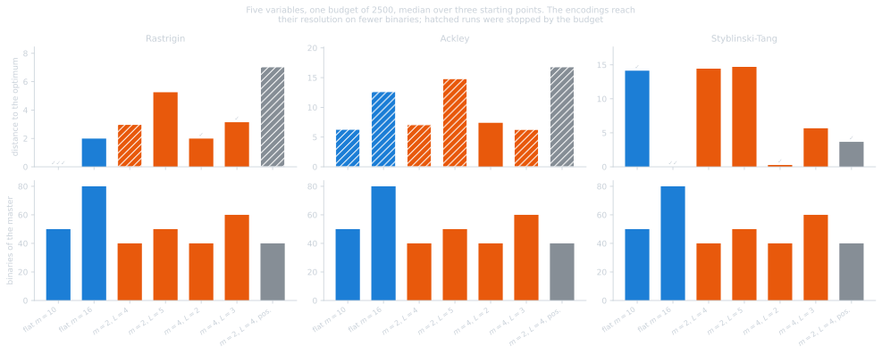
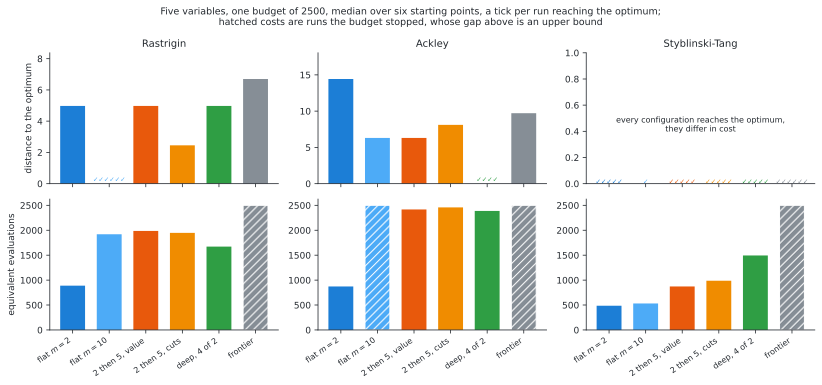
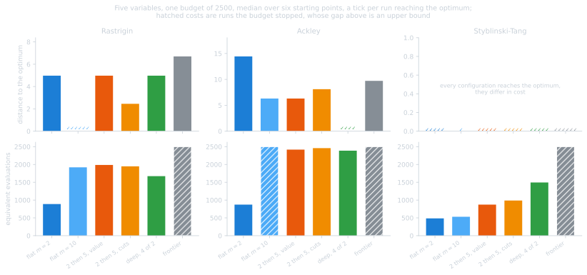

Annex D: the extensions, measured#
The four extensions of the method, table by table, and the budget re-runs behind the rankings. The results carry the verdicts; this annex carries what they were read off.
Five variables, \(2500\) equivalent evaluations, three starting points unless a table says otherwise. The constructions are derived in the methodology and the sweeps setting their parameters are in annex C.
Subdividing some variables only#
Subdividing some variables only wins where the multimodality is concentrated and loses where it is not, which is the requirement of the method restated: a variable left out keeps all of its basins inside every box. On Styblinski-Tang, multimodal in every variable, leaving three of the five out takes a run from two starting points out of three to none.
subdivision of |
boxes |
binaries |
gap |
cost |
reached |
|---|---|---|---|---|---|
all 5 variables, \(m=2\) |
32 |
10 |
\(1.99\) |
540 |
0/3 |
3 variables, \(m=4\) |
64 |
12 |
\(0.00\) |
773 |
3/3 |
2 variables, \(m=10\) |
100 |
20 |
\(0.00\) |
858 |
3/3 |
2 variables, \(m=5\) |
25 |
10 |
\(1.99\) |
620 |
0/3 |
1 variable, \(m=10\) |
10 |
10 |
\(3.98\) |
419 |
0/3 |
The cheapest configuration that works is not the one matching the
multimodality exactly. partly_multimodal is Rastrigin in two variables and a
paraboloid in three, yet splitting three variables into four beats splitting
the two into ten, \(773\) evaluations against \(858\): twelve binaries against
twenty, and the extra variable costs nothing to subdivide because it is unimodal
in every box. The binaries govern here as everywhere else.
The multi-resolution encoding#
One categorical variable per level, with the box index read off as its base-\(m\) digits, is the one construction here that changes how many binaries a resolution costs. Five variables, three starting points, the same budget of \(2500\), median distance to the optimum:
encoding |
binaries |
resolution |
Rastrigin |
Ackley |
Styblinski-Tang |
|---|---|---|---|---|---|
flat, \(m=10\) |
50 |
10 |
\(0.00\) · 3/3 |
\(6.30\)† |
\(14.14\) · 1/3 |
flat, \(m=16\) |
80 |
16 |
\(1.99\) |
\(12.63\)† |
\(0.00\) · 2/3 |
levels \(m=2\), \(L=4\) |
40 |
16 |
\(2.99\)† |
\(7.08\)† |
\(14.44\) |
levels \(m=2\), \(L=5\) |
50 |
32 |
\(5.25\) |
\(14.82\)† |
\(14.70\) |
levels \(m=4\), \(L=2\) |
40 |
16 |
\(1.99\) · 1/3 |
\(7.40\) |
\(0.27\) · 1/3 |
levels \(m=4\), \(L=3\) |
60 |
64 |
\(3.14\) · 1/3 |
\(6.28\)† |
\(5.67\) |
levels \(m=2\), \(L=4\), positional |
40 |
16 |
\(7.04\)† |
\(16.81\)† |
\(3.68\) · 1/3 |
† stopped by the budget.


The construction does what it claims. Two levels of four reach a resolution of sixteen on forty binaries against the eighty of the flat encoding, and at that resolution they are not worse for it: \(1.99\) against \(1.99\) on Rastrigin, with one starting point reaching the optimum where flat \(m=16\) reaches none, and \(0.27\) against \(0.00\) on Styblinski-Tang for fewer evaluations, \(920\) against \(973\). The saving grows with the resolution: sixty binaries buy sixty-four subdivisions per component, which would cost \(320\) flat.
Styblinski-Tang is where it earns its place. That problem is the one the density sweep breaks on: ten subdivisions per variable, the best density elsewhere, returns \(14.14\) and reaches the optimum from one starting point out of three. Sixteen subdivisions fix it, and the cheapest way to sixteen is two levels of four, which gets within \(0.27\) of the optimum on half the binaries of the flat encoding that matches it. Where the useful density is above what the binaries can afford, this is the construction that reaches it.
It does not rescue the problems whose difficulty is elsewhere. On Rastrigin nothing beats plain flat \(m=10\), whose resolution the encoding was never needed for, and on Ackley every configuration is truncated by the budget and none reaches the optimum, the difficulty there being a basin too broad for any resolution rather than a resolution too expensive.
Fewer, wider levels beat more, narrower ones. At the same resolution of sixteen and the same forty binaries, \(m=4, L=2\) beats \(m=2, L=4\) on all three problems, by \(1.99\) against \(2.99\), \(7.40\) against \(7.08\) near enough, and \(0.27\) against \(14.44\). Adding levels is what makes the cut model’s additivity bind: it is linear in the one-hot variables, so it can express what a level contributes on its own but not that a fine digit’s effect depends on the coarse digit it sits inside, and each level is another dimension over which that is wrong. The five-level row is the worst unit row on two problems out of three.
The positional weighting stays the wrong choice, worst on Rastrigin and Ackley by a wide margin, which is the trust-region metric conclusion reappearing in a second and independent setting: weighing a subdivision by its own index expresses a proximity the problem does not have.
The hierarchies#
A hierarchy was built in three shapes. The deep one reaches the optimum of Ackley from four starting points out of six, which nothing else here does; none of them beats the flat subdivision elsewhere.
method |
Rastrigin |
Ackley |
Styblinski-Tang |
|---|---|---|---|
flat \(m=2\) |
\(4.98\) |
\(14.43\) |
\(0.00\), 5/6, 486 |
flat \(m=10\) |
\(0.00\), 6/6, 1920 |
\(6.30\), 2500† |
\(0.00\), 1/6, 532 |
two levels, by value |
\(4.98\) |
\(6.30\) |
\(0.00\), 5/6, 872 |
two levels, by cuts |
\(2.45\) |
\(8.11\) |
\(0.00\), 5/6, 987 |
deep, 4 levels of 2 |
\(4.98\) |
\(0.00\), 4/6, 2387 |
\(0.00\), 5/6, 1494 |
frontier, best first |
\(6.70\), 2500† |
\(9.71\), 2500† |
\(0.00\), 6/6, 2500† |
† stopped by the budget. The frontier is truncated by construction, its loop expanding boxes until the budget is spent.


Two readings the medians alone hide, and one caveat that undoes part of the first.
The deep hierarchy solves Ackley at five variables, from four starting points out of six, and it ends on its own criterion at \(2387\) evaluations rather than on the budget. The flat subdivision at the same density returns \(6.30\) here, but four of its six runs were stopped by the budget, so this row understates it: given twice the budget it reaches the optimum from two starting points out of six, and no further with more. The margin is four out of six against two, which is measured below rather than read off this table.
On Styblinski-Tang every configuration solves the problem, so that panel is about cost alone, and the flat coarse subdivision wins outright, \(486\) evaluations against \(872\) to \(2500\) for the hierarchies. The frontier is the only shape reaching it from all six starting points, for five times the cost of the cheapest that reaches five.
The frontier, which is the only shape able to undo a choice, is the worst of the family on Rastrigin, \(6.70\) against \(4.98\) for doing nothing at all, and the reason is not the backtracking it adds but what it costs: every node restarts a master and throws its cuts away, so the same budget that fills one model with fifty cuts fills ten models with five each, none of them determined enough to rank its own children. What the flat method does instead is keep one model over the whole subdivision and localize with its trust region, which can also widen again.
So the hierarchies are not a default and are not a failure either. They are the answer to one specific shape of problem, a basin too broad for any affordable density, and the flat subdivision remains the answer everywhere else.
Does more budget change the answer?#
Several comparisons above are between runs the budget stopped, so the obvious question is whether the rankings are properties of the method or of the number \(2500\). On the one comparison where it matters most, Ackley at five variables, the answer is measured rather than argued. Six starting points:
budget |
flat \(m=10\) |
deep, 4 levels of 2 |
|---|---|---|
\(2500\) |
\(6.30\) · 2500 · 0/6 · 4 of 6 at the wall |
\(0.00\) · 2387 · 4/6 · none at the wall |
\(5000\) |
\(5.62\) · 3306 · 2/6 · none at the wall |
\(0.00\) · 3093 · 4/6 · none at the wall |
\(10\,000\) |
\(5.62\) · 3306 · 2/6 · none at the wall |
\(0.00\) · 3093 · 4/6 · none at the wall |
Two things follow, and the first is a correction.
The budget was hiding part of the flat method’s result. At \(2500\) it reaches the optimum from no starting point; given twice that, it reaches it from two out of six. The comparison that produced “only the hierarchy solves Ackley” was between a truncated run and a finished one, and the honest margin is four out of six against two, not four against none.
Past that, more budget buys nothing at all. The rows at \(5000\) and \(10\,000\) are identical, to the evaluation: both configurations stop at \(3306\) and \(3093\) evaluations whatever they are allowed. They end on their own caps, the trust region shrinking to infeasibility or the stall counter firing, described in annex C. So on this problem the budget is not the binding constraint and raising it is not the way; what binds is the stopping rule.
That is the general answer to the question, and it cuts both ways. Where a cell reports a cost below its budget, the budget was never binding and the comparison stands as measured, which covers most of this page, including the whole Rastrigin column: flat \(m=10\) solves it from all six starting points for \(1920\) evaluations at a budget of \(2500\), of \(5000\) and of \(10\,000\) alike. Where a cell reports a cost equal to its budget, the number is an upper bound and the ranking is only “within this budget” until it is re-run, as Ackley was here.
What the results make of all this is the page these tables support.